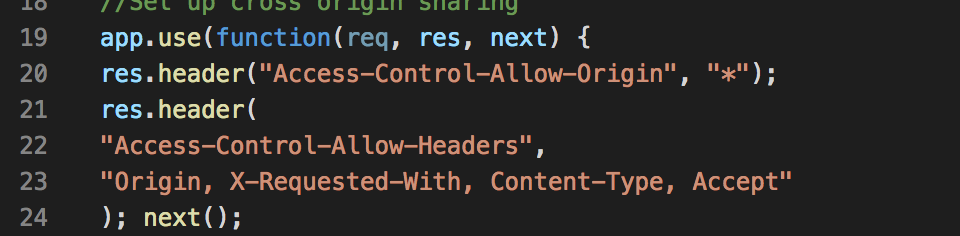

I was hired as a security consultant to document and resolve any security and privacy issues in two applications, a client-side one and a server-side one.
In order to find these vulnerabilities, I used a scanner tool. The tool that I relied on was the OWASP Zed Attack Proxy (ZAP). I then entered the URL for the general home route as well as the passenger.json route.
The vulnerabilities that I found were regarding X-Frame Options Headers, No-cache Controls, no XSS protection, and a missing X-Content-Type-Options header.
Issue: X-Frame-Options Header not set
Location: This issue was found in the GET response for the home route identified by "/".
Severity of issue: This issue was listed to have a medium risk. I agree with this assignment of risk level because this issue can only take place if the user has truly been tricked, otherwise nothing is truly at risk.
Description of issue: This issue was found through the ZAP application. The issue of not having this header set is that the application is not protected against "clickjacking" attacks. These attacks allow for users to be tricked into clicking on something different from what they perceive which can allow for confidential information to be revealed or other people being able to take over the computer.
Proof of vulnerability:
As the image shows, the section of code in which my client is setting alternative headers, this particular header is not set.
Resolution: The solution to this potential problem would be to add the X-Frame-Options Header in the area where other headers are being declared.
Issue: No Cache-Control Header set
Location: This issue was found in the GET response for both the home route and the passenger.json route.
Severity of issue: This issue was listed to have a low risk. I agree with this assignment of risk level a lack of cache control would only mean that the client would not receive the latest changes from the most recent deployment. There is no, however, risk of something bigger happening, such as leaking of confidential information.
Description of issue: This issue occurs when someone access a site after the first time that they have accessed it and things look weird due to certain styles being broken. These styles become broken when there are no policies for cache controlling. This lack of policies makes it so that the user does not receive the latest changes.
Proof of vulnerability:
As the image shows, the section of code in which my client is declaring alternative headers, there are no headers for cache-controlling.
Resolution: The solution to this problem would be to include a header for cache-control.
Issue: No XSS Protection enabled
Location: This issue was found in the GET resposne for both the home route and the passenger.json route.
Severity of issue: This issue was listed to have a low risk. I, however, believe that this risk should at least be listed with a medium risk due to the fact that is listed in the OWASP top 10.
Description of issue: Including an XSS protection header makes it so that browsers on which programs are running can stop pages from loading when cross-site scripting attacks are detected. Without this header, the code is vulnerable to this attack.
Proof of vulnerability:
As the image shows, this section of the code does not include any header for XSS protection.
Resolution: The solution to this problem would be to include the appropriate header, which can come in the syntax: X-XSS-Protection: 1; mode=block.
In the future I believe that the client should look at resources such as the OWASP top 10 and make sure that the code has the appropriate lines to combat those common security issues.
https://medium.com/pixelpoint/best-practices-for-cache-control-settings-for-your-website-ff262b38c5a2
https://developer.mozilla.org/en-US/docs/Web/HTTP/Headers/X-XSS-Protection
https://www.owasp.org/index.php/Clickjacking
https://www.owasp.org/index.php/Top_10_2013-Top_10